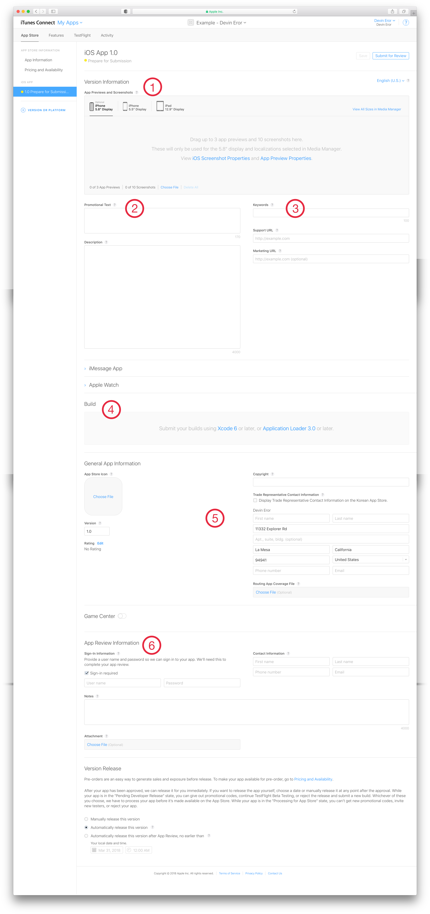

Publishing an iOS Application to the App Store
Introduction
Publishing an App to Apple’s App Store can be a complicated process. Over the years their publishing platform, iTunes Connect, has become easier to work with. But the first attempt at publishing an iOS App can still be intimidating. This set of instructions will help assist you in connecting your app to iTunes Connect, complete the process of preparing it for review, publishing it to the App Store, and interpreting the generalized data tracked through iTunes Connect.
Materials
◽ Already built iOS Application.
◽ An Apple Developer Account (see link on left of screen)
In order to publish an application to the App Store, only two things are needed. 1) An application. This set of instructions is based off the assumption that you have completed the process of developing an application in Xcode. And 2) an Apple Developer account. A Developer Account should have previously been created through developer.apple.com.
Preparations:
In addition to the required materials, you will also need to prepare your application's icon set and at least one (with a maximum of ten) screen shots.
Creating your App in iTunes Connect
Step 1 — Initialization
iTunes Connect's home screen contains several icons to help you manage various parts of of the application deployment process. The first step in publishing an app is creating an application in iTunes Connect. To do this, select the "My Apps" icon at the top left of the available icons. From here, select the plus button (which is also located towards the top left of the screen).
This will bring up the New App card as seen below:
- Choose the type of app you are publishing.
- Pick a name for your application. This must be unique, and with the size of the App Store, this can be difficult. One method of avoiding conflicts is to add a hyphenated title (i.e. "
- The best west of the Mississippi"). - Select the language you expect most of your user base to use.
- The Bundle ID is what links your app in iTunes Connect to the app you've built in Xcode. If your app's Bundle ID isn't listed, you will need to go back to developer.apple.com and set it up.
- The SKU will need to be a unique identifier. After this point it won't be needed for the purposes of this tutorial.
Step 2 — App Information
After creating your app in iTunes Connect, you will be greeted with the App Information page. This page contains general information about your app that will inform your users about the various aspects of your app before purchasing.
- This is the name you created in the previous step.
- Subtitles will appear under your App Name and should help describe your app as briefly as possible.
- The Privacy Policy is optional, unless your app gathers data or is a "Made for Kids" app. In which case you will be required to enter a URL to your Privacy Policy.
- If you ever change your Bundle Identifier in Xcode, you will also need to change it here.
- Here you can add a secondary language if applicable.
Step 3 — Pricing and Availability
The next tab down on the left side of the screen is the Pricing and Availability setup. From here you will need to set the price for your app (even if it is going to be sold as Free). Prices can also be set differently for different currencies.
You are also able to setup preordering, customize availability by territory, offer discounts for volume purchases, and disable bitcode auto-recompilation.
Step 4 — Prepare for Submission
To finish the preparation process, select 1.0 Prepare for Submission. This is the largest step (second to creating your app) and most complicated. This is simplified by handling each section individually.
- Every app submission requires at least one (and as many as 10) previews and screenshots for each of your app's supported devices. This is best accomplished by running your app in the simulator and pressing ⌘ + S to save a screenshot. A preview can be filmed by using either a device or the simulator and the Quicktime application to record the screen.
- Promotional text is the first thing a user will see when they tap on your app in the App Store. It is intended to be used as a way to highlight current features. Under this is the App Description, which is intended to detail the content of your application.
- Keywords — used to help users find your app when searched.
Support URL — a link to an external website used to answer potential user's questions.
Marketing URL — an optional link to help further inform a potential user on why they should download your app.- A build of your app will appear here after it is sent to Apple through Xcode and finishes processing.
- General App Information — Starting with the upper left, the App Store Icon will be filled in when an uploaded build of your app is selected. Below this is the version number. it is populated with
1.0, and should be increased with every version submitted to the App Store. Apple will not approve an app submitted with a less than1.0version number. A general age rating will be generated for your app by tappingedit, and filling out the corresponding survey. If you own a Copyright the date and Copyright holder should be entered in the field provided. A street address is required for an App Store submission, it will not be viewable on the App Store (unlessTrade Representative Contact Informationis selected, in which case the information provided will be viewable in the Korean store).- If your application requires users to sign in you will need to provide a generic user for Apple to use with their review. You will also need to provide contact information for the reviewer and can provide any notes to help the reviewer understand aspects of your app.

Step 5 — Archiving and Sending a Build to Apple
Jumping out of iTunes Connect, open your application's project file. In order to get the app from Xcode to iTunes Connect an archived build needs to be sent to Apple.
- Before Archiving your project, make sure your project set to run on
Generic iOS Device(or a physical device you have connected and paired to your developer account).- In the menu bar, select
Productand Archive.
Archive Step 1:
- After the archive is built, select
Send To App Store
Archive Step 2:
- Leave the settings at their default state and select
Next.
Archive Step 3:
- Select
Next.
Archive Step 4:
- Select Upload. This process should take up to about 5 minutes depending on the size of your app.
Archive Step 5:
After uploading the build it will take some time to process on Apple's servers before being available to add to your iTunes Connect (this has recently been improved to take 5-20 minutes). Once it has finished processing Apple will send an email (or push notification if you have the iTunes Connect iOS App downloaded).
Switching back to iTunes Connect, select the build you just uploaded in the 1.0 Prepare for Submission section (see Step — 4 item 4). Once the build has been selected, save your progress again and select Submit for Review. The review process can take anywhere from a few hours to a few days to complete, but once it does your app will be available in the App Store for download (unless Apple rejects it, in which case, follow their directions on what needs to be changed and follow the above steps to resubmit).
Best of luck!